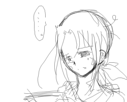
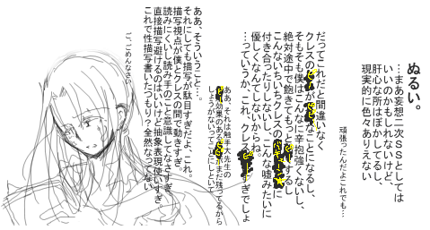

気を失ったクレスを、自分の世界の側の湖まで運んで、起こしてしまわないように気をつけながら、身体をそっと洗って、服を着せて。
小さな体を木の根元に横たわらせてから、ネウは、やっとひとつ息をついた。
ちらり、と空を見て星の位置を確認する。表の世界と裏の世界の境界が重なる時間が終わるまで、後少しだった。
「クレス」
聞こえないのを承知で呟く。
無防備な寝顔は、疲れ切ってはいても、歪んではいなかった。悪い夢に魘されていることもなさそうだ。だったら、このまま自然に目が覚めるまで眠っていればいい。幸い、一度眠ったらなかなか目が覚めない彼のことだから、無理やり肩を揺さぶりでもしない限り、目を覚ますことは無いだろう。
自分と同じ色をした短い髪を、そっと手に取って梳いてみる。
もう一人の自分。
自分のもう一つの、在り得たかもしれない「過去」の姿。
「君は僕じゃないんだから」
呟いて、手を離す。
少しずつ、空が白むように、クレスの身体の輪郭が薄れてきていた。重なっていた世界が元に戻ろうとしているのだ。
溜息をつく。
自分はこれで構わないが、このもう一人の自分は、目が覚めたあとどうするだろう。
何となく容易に予想はついてしまうあたりが、面倒くさい。
少しの間考えてから、ネウは手を伸ばした。
クレスの夜空を映した上布の結び目を、解いて、細い身体を抱きしめるような形に結びなおす。
「…………」
正直、彼がどうなろうと知ったことではなかった。
けれど。
ふいに、風が吹いた。
草原をざわざわと歌わせる強風に一瞬目を閉じて、開くと、もうそこにクレスの姿は無かった。目を細めて、苦笑する。次に会うことがあるのは少なくとも一月後だ。その時までに、彼の心が少しでも癒えていればいいと思った。また雨に降られるのはごめんだ。
「君は、僕になっちゃいけないんだよ」
子守唄のような祈りの言葉が、似つかわしくない淡々とした声で紡がれて、消えた。
次にもしもこんなことがあったとしても、
今度は彼が、閉じこもることなく、自分で誰かに助けを求めてくれるように。
人であることを拒絶した自分と違って、彼は今も人のいる世界に生きているのだから。
＊
あとがき。
本当にすいませんでした。
もうやらないよ！うん！多分ね！←
もうこれでこの場所も立派な裏ですねはっはっは。うん。はっはっは。
画面の向こうの貴方にドン引かれていないか私は正直現在非常に心配です。
…いやぁ……うん……。
エロ書くのって難しいなぁ……。
当日に３時間くらい？で書き上げたのはもっとあっさりしてたんですが、ネウがこんなにあっさりしているはずがない…！という衝動のもともっと引き延ばしてみました。
何というか、えっと、すいませんでした。←
我が家のネウは変態でドＳです。色んな意味で。
ページの間（クレスが気絶するまで）にどんな展開があったのかは貴方の心の中に
ちなみに。
この妄想ＳＳを本人たちに読ませたらどうなるのかというと、
クレスの場合（精神衛生上の都合で最初にネウに抱きしめられるシーンまで）

※最初の２０行くらいで読むのを諦めたようです
※むしろそれ以外の何かも諦めたようです
ごめんなさいちょっと後でミラに殴られてきます
フィクションだから大丈夫だよ！
クレスはまだちゃんと童貞で処女でノーマルだから大丈夫だよ！←←
ネウさんの場合（このページの事後談（？）は文句言われそうなので見せてません←）

この人は何というかツッコミどころも斜め上にふっ飛んでいるようです。
ネ「ついでに言っとくけど僕別にクレスのことこんな風に襲ったりなんてしないからね」
星「えっでもネウ両刀だよね？」
ネ「そうだけど、別にクレスを襲おうとかそんなことは思わないな」
星「襲えって言われたら？」
ネ「襲ってもいいけど面倒だから嫌だな」
おわれ。
…そうそうそれと、今回のタイトル「月食南中」は、月食＝満月が新月に犯さｒ隠されてくようにも見えるとこから付けてみました。正確にはバリバリ違いますけどいいんですフィーリングだから。
雨関連のタイトルでもいいかなと思ったんですがいいのが思いつかなかったので却下
ネウクレは書いてて楽しいんですが、１００％救われないうえに愛もないしクレスが不憫すぎるしでちょっと＼(^o^)／な気分になります。
お互いに一緒にいない方がいいと分かっちゃってるようなそんな感じ。
まあ、そこもそこで大変美味しいんですけどね！！←←
だから万が一成り立ったとしても一瞬だろうな！
あ、でも、この後クレスの側の世界に降ってた雨はちゃんと止むので一応救われてることになってるのかな！救われてたらいいな！
今回のはどっちかというと殺伐としてたので、次は何か砂を吐くような甘いものが書きたいです。まる。
そんなカップルが我が家（の裏）には既に一組いる訳なんですがしばらくは本編更新の方をがんばりますまる。←
|